28 listopada 2019
Pierwsza publiczna edycja
Kończymy pierwszy kurs Alpha w Lubecku po jedenastu spotkaniach. Uczestnicy mówią o wspólnocie, nowym spojrzeniu na wiarę i pragnieniu dalszej drogi.

Historia i owoce
Nie udało się zebrać uczestników na kolejne Kursy Nowe Życie. Zamiast kończyć poszukiwania, zespół postawił pytanie: co możemy zrobić inaczej?
Odpowiedź była prosta: „Sprawdźmy Alpha na sobie”. Pierwsze spotkania odbywały się w domu, przy stole, z materiałami i rozmową we własnym gronie.
Pierwszą publiczną edycję zakończyliśmy w listopadzie 2019 roku.
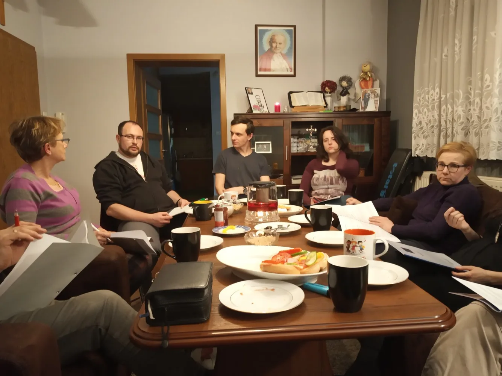
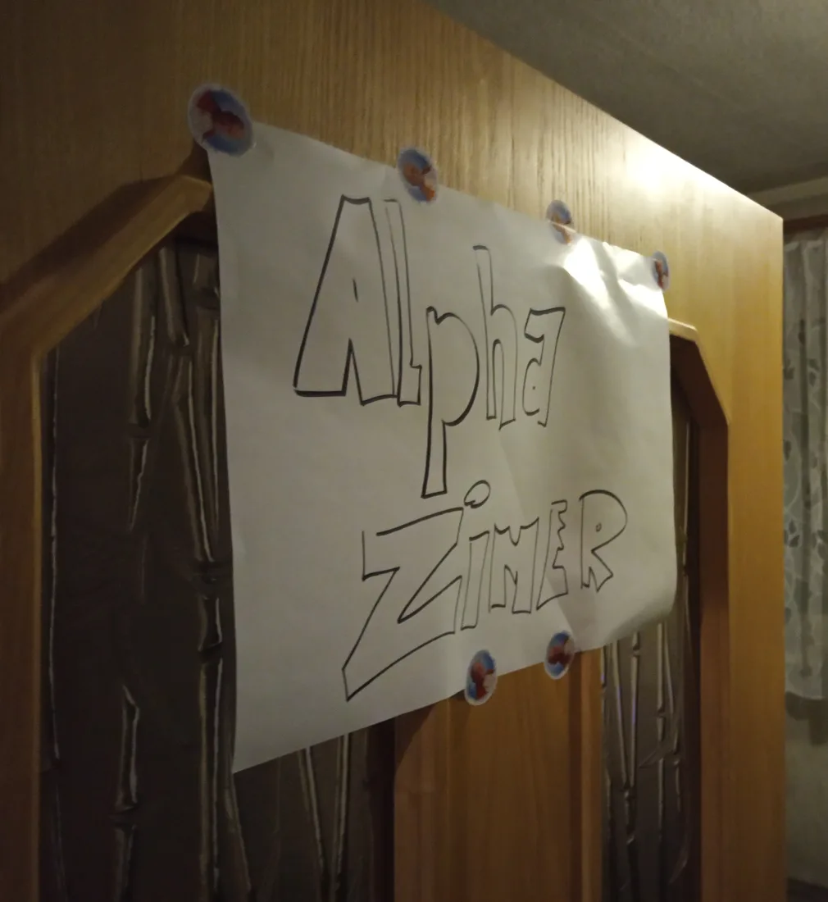
Droga Lubecka
Kończymy pierwszy kurs Alpha w Lubecku po jedenastu spotkaniach. Uczestnicy mówią o wspólnocie, nowym spojrzeniu na wiarę i pragnieniu dalszej drogi.
Podczas drugiej edycji ponownie przeżywamy Dzień Alpha. Jest czas wspólnej modlitwy, spotkania oraz posiłku przy jednym stole.
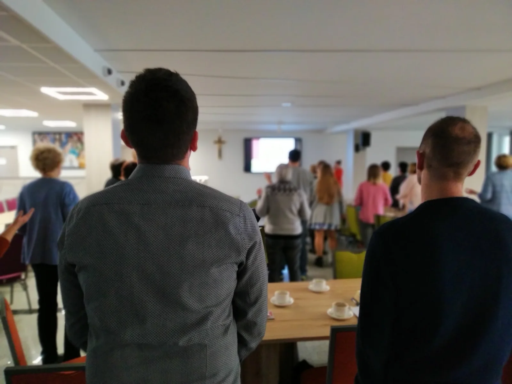
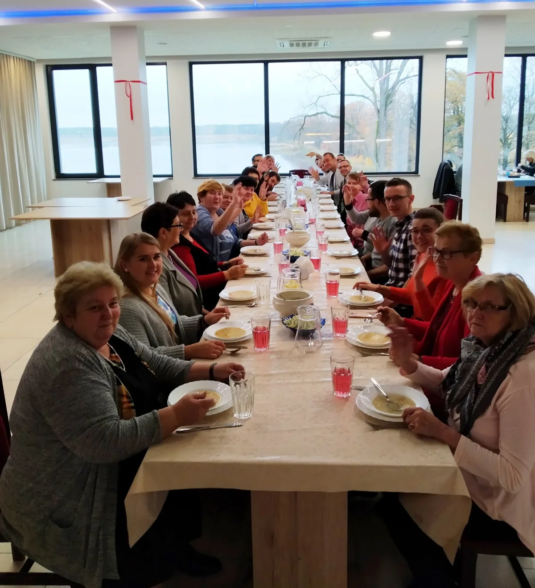
W czasie pandemii przenosimy spotkania do internetu. Mimo odległości nadal jest miejsce na rozmowę, modlitwę i budowanie relacji.
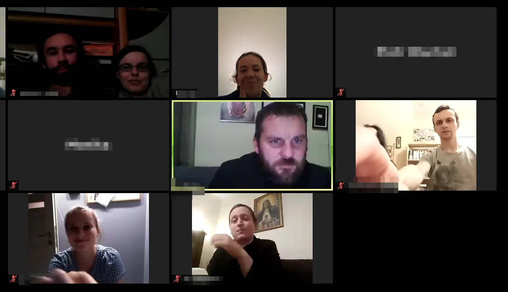
Format trafia także do młodszych uczestników. W Kawiarence Lubecko rozpoczynamy pierwszą Alpha dla młodzieży — przestrzeń na ich pytania, rozmowę i budowanie relacji.
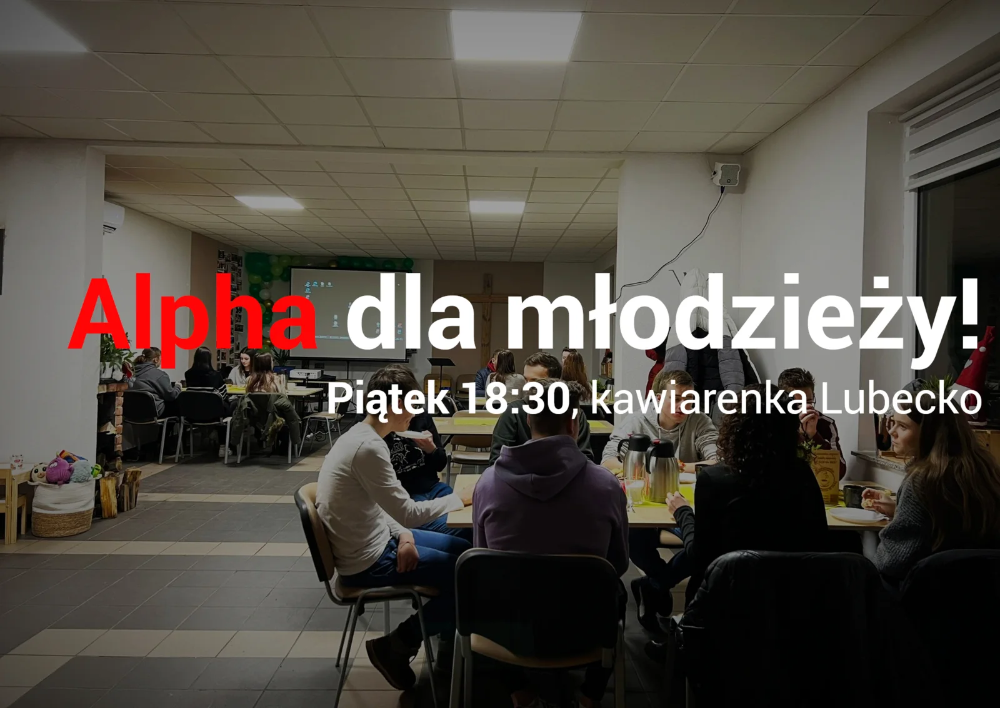
Prowadzimy szkolenia Alpha w Gliwicach i Koszęcinie. Zaczynamy przekazywać dalej doświadczenie zdobyte w Lubecku.
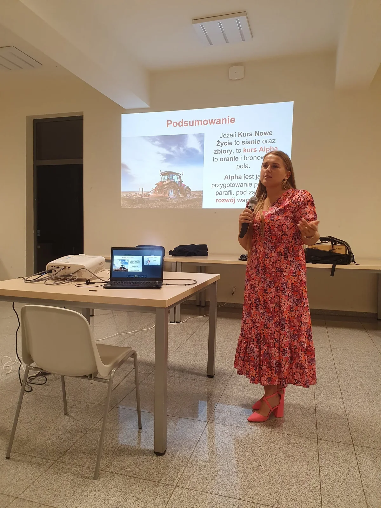
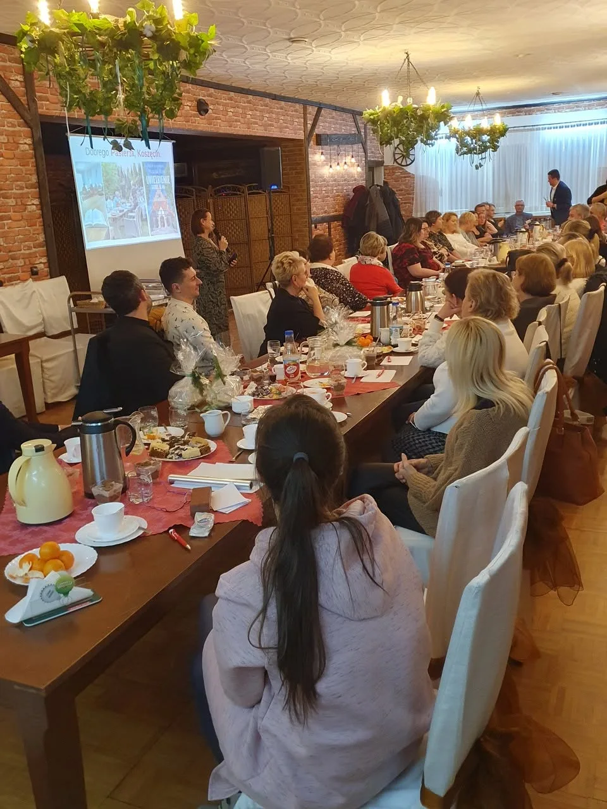
Podpisujemy z Alpha Polska porozumienie dotyczące posługi Koordynatora Regionalnego Centrum Alpha przy Szkole Nowej Ewangelizacji w Lubecku.

Doświadczenie Lubecka służy pomocy zespołom w Koszęcinie, Lisowicach, Lisowie, Zawadzkiem i Olszynie. Szkolenie, pierwsza edycja i Dzień Alpha stają się wspólną drogą.
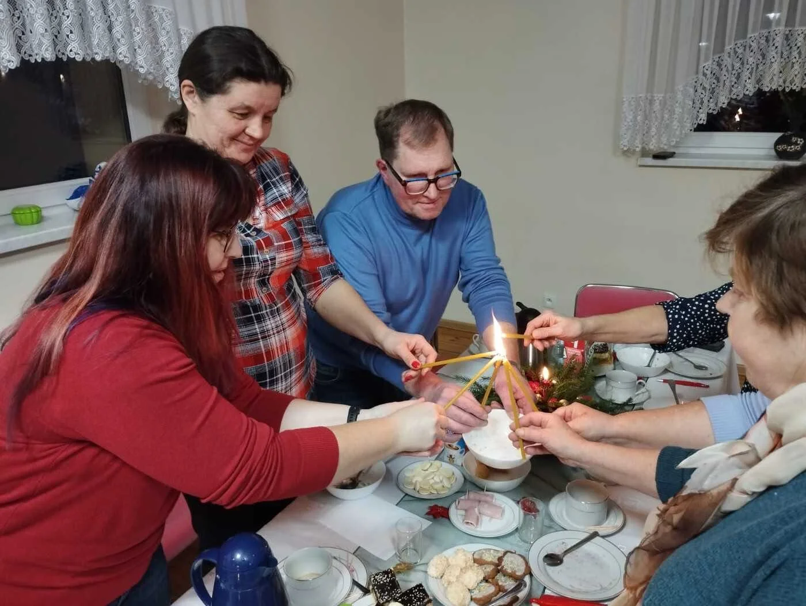
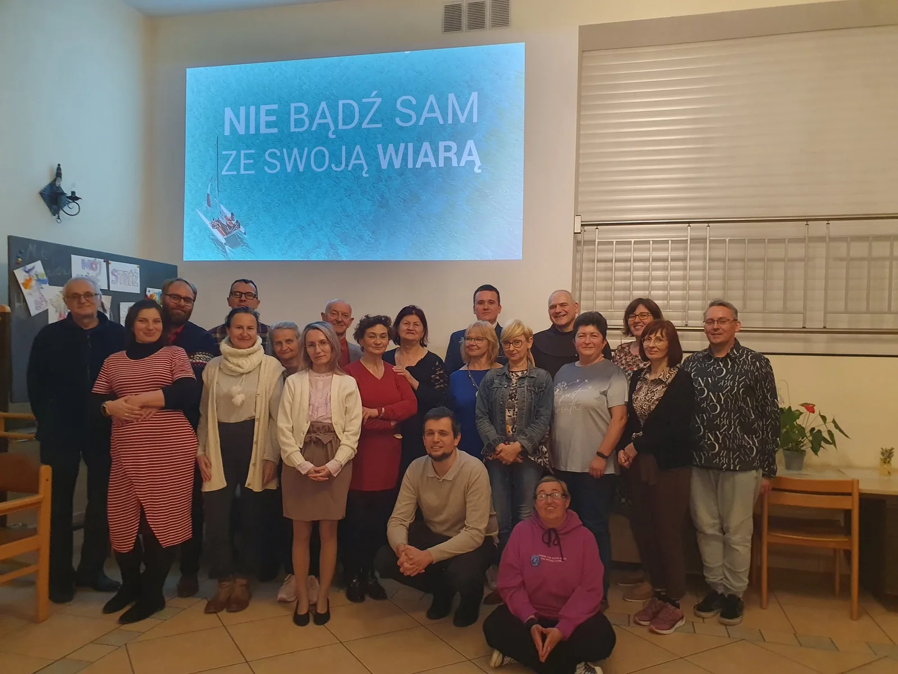
Ks. Tomasz Hajok i Sławomir Paszko dzielą się doświadczeniem wpływu Alpha na parafię podczas Forum Parafialnych Rad Duszpasterskich.

Kolejne spotkania formują uczestników i osoby zaangażowane w ekipę. Alpha staje się rozpoznawalną częścią życia wspólnoty.

Zapisane w archiwum
Archiwalne relacje pozwalają uzupełnić historię o daty, miejsca i skalę kolejnych działań.
Jedenaście spotkań i pierwsze świadectwa uczestników w Lubecku.
Jedno z pierwszych udokumentowanych szkoleń prowadzonych przez zespół z Lubecka.
Podpisanie porozumienia z Alpha Polska dotyczącego posługi regionalnego koordynatora.
Dzielimy się doświadczeniem Alpha i odnowy parafii podczas Forum Parafialnych Rad Duszpasterskich.
Historie, które zapraszają
Do naszej historii dołączamy także dwa filmy, które pokazują, jak osobiste spotkanie, pytania i relacje mogą otwierać nową drogę.
Historia Alpha
Otwórz film na YouTube ↗
Historia Kuby
Otwórz film na YouTube ↗
Głos uczestnika
Jedno z pierwszych świadectw Alpha w Lubecku. Kolejne zebraliśmy na osobnej stronie.
Zobacz inne świadectwa →„Alpha dała mi nowych znajomych, nowe siły, więcej wiary. Dała mi czwartek, na który czekałem cały tydzień”.
Miejsca, którym towarzyszymy
Od własnych edycji w Lubecku przeszliśmy do szkolenia i wspierania zespołów w kolejnych miejscach. Kliknij zdjęcie, aby je powiększyć.
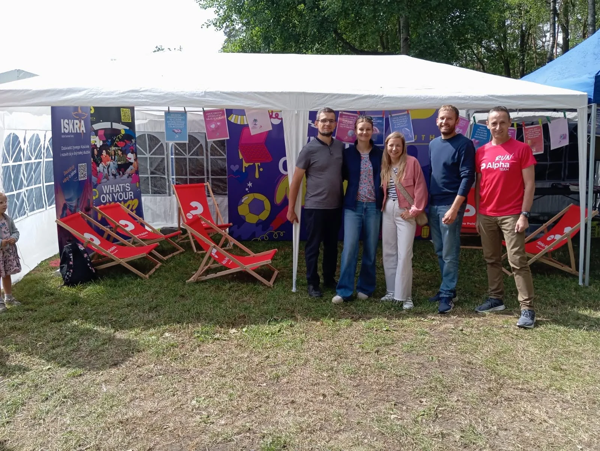
Dzielimy się doświadczeniem
RCA Lubecko prowadzi szkolenia, wizyty inspiracyjne i wspiera pierwsze edycje w nowych miejscach. Współpracujemy z Alpha Polska oraz innymi regionalnymi centrami i wspólnotami.
Zacznij Alpha z naszym wsparciem